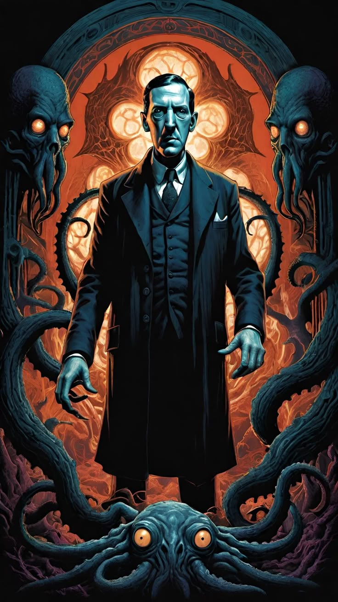
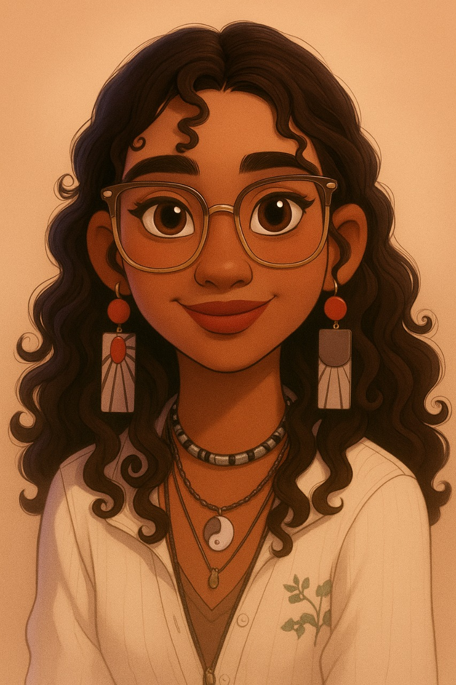
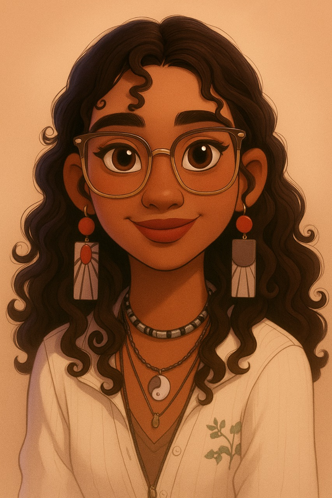
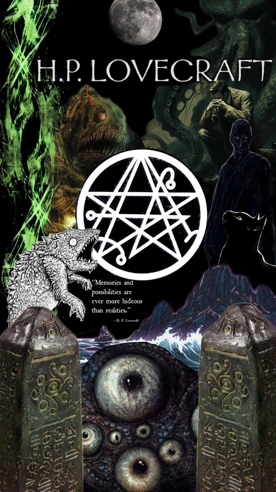
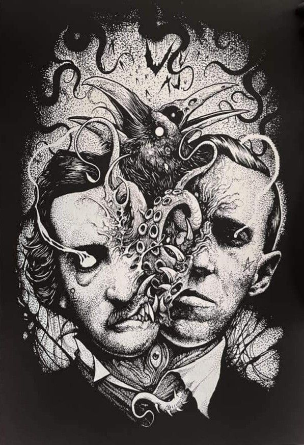
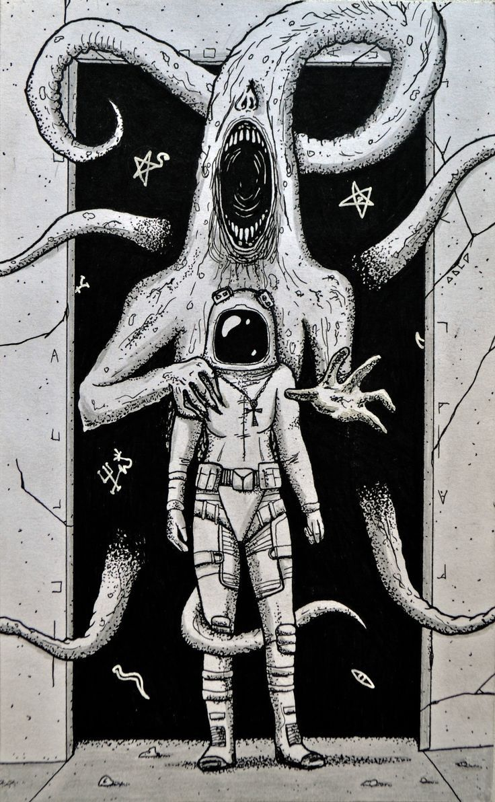

Sobre el Proyecto
INSPIRACIÓN
Este proyecto nace de la obra El Horror del Museo (1933), escrita por H.P. Lovecraft junto con Hazel Heald. Más allá de ser un cuento clásico de terror, esta obra representa un viaje hacia lo desconocido, donde lo prohibido y lo reprimido cobra vida. Su atmósfera oscura, los personajes enigmáticos y el vínculo con lo fantástico nos inspiran a trasladar la lectura tradicional hacia una experiencia interactiva y digital, donde los jóvenes no solo lean, sino que sientan. Así, el museo del cuento se convierte en una metáfora: cada libro, un espacio donde lo oculto puede revelarse.
PROPÓSITO
El propósito central es fomentar la lectura digital inmersiva, es decir, llevar a los jóvenes más allá del simple acto de leer un texto. Queremos que se sientan parte de la historia, que interactúen con ella, que la vivan como si fuese un cómic, un videojuego o una narrativa transmedia. La meta es romper la distancia entre lector y libro, para que cada página sea una puerta hacia lo desconocido, lo emocionante y lo memorable.
Misión & Visión
Misión: Crear experiencias digitales interactivas que despierten el interés de los jóvenes por la lectura, integrando elementos visuales, sonoros y narrativos que conecten con sus emociones, susgustos y su forma de expresarse.
Visión: Convertirnos en una plataforma referente de lectura alternativa en Latinoamérica, donde la literatura clásica y contemporánea pueda reimaginarse en formatos inmersivos que acompañen a las nuevas generaciones en su descubrimiento del placer por leer.
HISTORIA
La historia de este proyecto comienza con un diagnóstico claro: los jóvenes en Colombia y en gran parte de Latinoamérica leen menos y cada vez se sienten menos identificados con las lecturas obligatorias escolares. Durante la investigación, se evidenció que la mayoría considera que los libros impuestos en clase son “aburridos”, “difíciles” o “lejanos a sus intereses”. Frente a esto, surgió la idea de rescatar la lectura desde sus propios gustos, tomando géneros como el terror, la fantasía y la ciencia ficción, altamente consumidos en internet a través de creepypastas, videojuegos y series. Así, el proyecto une ese interés natural con el universo literario, proponiendo una experiencia que ya no es solo “leer”, sino explorar, descubrir y sentir.
IMPORTANCIA DE LA LECTURA
En Colombia, las estadísticas refuerzan la necesidad de un cambio:Según el DANE (2022), el promedio
de lectura en el país es de apenas 2,7 libros por persona al año, muy por debajo de países como
Argentina (5,5) o España (8,9).
Solo un 29% de los jóvenes entre 12 y 24 años afirma leer por gusto; la mayoría lo hace por
obligación escolar.
El tiempo invertido en redes sociales y plataformas audiovisuales supera las 4 horas diarias,
mientras que en lectura no llega a los 30 minutos.
Esto muestra un problema claro: los formatos tradicionales no están conectando con las nuevas
generaciones.
Por eso, el proyecto cobra relevancia al proponer una alternativa que usa su mismo
lenguaje (interactivo, visual, comunitario) para transformar la lectura en algo emocionante. La
lectura es más que un hábito académico: es una herramienta de pensamiento crítico, empatía y
creatividad. En un mundo saturado de imágenes rápidas, leer con emoción y sentido crítico es un acto
revolucionario. Este proyecto quiere ser la chispa que encienda ese interés.
AÑO DE CREACIÓN: 2025
El proyecto fue concebido y desarrollado en 2025, como respuesta a la necesidad creciente de transformar los hábitos de lectura en jóvenes. Surge en un contexto donde las pantallas dominan el aprendizaje y el entretenimiento, y donde los libros impresos pierden fuerza frente a contenidos breves y visuales. Nuestro reto fue aprovechar ese mismo ecosistema digital para darle un giro positivo: hacer de la lectura una experiencia viva, interactiva y atractiva.
EQUIPO
El proyecto está liderado por un grupo interdisciplinario de jóvenes creativos y académicos que
comparten una pasión por la lectura y la narración digital:
Diseñadores gráficos y visuales: responsables de dar vida a atmósferas oscuras y simbólicas
inspiradas en Lovecraft.
Guionistas y narradores: encargados de adaptar relatos clásicos al lenguaje interactivo.
Desarrolladores web y programadores: quienes crean la plataforma, el cómic interactivo y los
espacios comunitarios.
Investigadores en educación y comunicación: que aseguran que el contenido responda a los intereses y
necesidades de los jóvenes.
Este equipo une arte, tecnología y pedagogía en un solo espacio, convencido de que la lectura puede
reinventarse.
 

Conoce sobre nososotros y explora los rincones más oscuros de nuestro terrorifico museo literario.
Descubre y Siente
Recomendado para ti

Título del Libro B

Título del Libro C

Título del Libro D
Para cuando te sientes perdido
Historias que te harán dudar de la realidad
Misterios que no podrás soltar
Personajes tan extraños como tú
Multimedia
Videos Cortos
Galería Visual

Contacto
Tu próxima lectura... a leer lo que debe ser leído